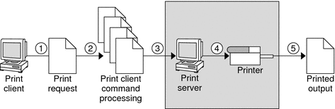
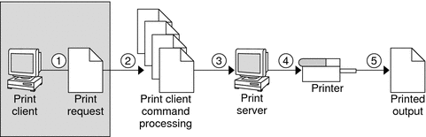
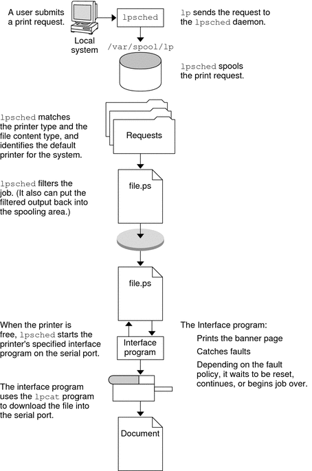

System Administration Guide: Solaris Printing
|
|||
|
1. Introduction to Printing in the Solaris Operating System Fundamentals of Printing in the Solaris Operating System Overview of the Solaris Printing Architecture Implementation of the Open Standard Print API Using Printing Protocols in the Solaris Release Overview of Solaris Print Manager Overview of the LP Print Service 2. Planning for Printing in the Solaris Operating System (Tasks) 3. Setting Up Printing Services (Tasks) 4. Setting Up Printers (Tasks) 5. Administering Printers by Using Solaris Print Manager and LP Print Commands (Tasks) 6. Administering Printers That Use Network Printing Protocols (Tasks) 7. Customizing Printing Services and Printers (Tasks) 8. Administering Character Sets, Filters, Forms, and Fonts (Tasks) 9. Administering Printers by Using the PPD File Management Utility (Tasks) 10. Setting Up and Administering Printers From the Desktop (Tasks) 11. Printing in the Solaris Operating System (Reference) 12. Troubleshooting Printing Problems (Tasks) |
The Solaris Print Client-Server ProcessThis section provides an overview of the print client-server process. Using Print ServersThe print server is a system that has a local printer connected to it and makes the printer available to other systems on the network. The following figure highlights the part of the print process in which the print server sends the print request to the printer. Figure 1-1 The Print Server Sends a Print Request to the Printer
Using Print ClientsA print client is a system that can send print requests to a print server. The following figure highlights the part of the print process in which the user submits a print request from a print client. Figure 1-2 The User Submits a Print Request from a Print ClientThe Print Client ProcessThe following figure illustrates the path of a print request from the time the user initiates the request until the print request is printed. Figure 1-3 Overview of the Print Client Process
How Local Printing WorksThe print request follows the same path it would if the client and server were separate systems. Requests always flow from client to server following the same path. The following figure shows what happens when a user submits a request to print a PostScript file on a local printer, which is a printer connected to the user's system. The lpsched daemon on the local system does all processing. This processing might include the following:
The printer interface program does the following:
How LP Administers Files and Schedules Local Print RequestsThe LP print service has a scheduler daemon called lpsched. The scheduler daemon updates the LP system files with information about printer setup and configuration. The lpsched daemon schedules all local print requests on a print server, as shown in the following figure. Users can issue the requests from an application or from the command line. Also, the scheduler tracks the status of printers and filters on the print server. When a printer finishes a request, the scheduler schedules the next request n the queue on the print server, if a next request exists. Without rebooting the system, you can stop the scheduler with the svcadm disable application/print/server command. Then, restart the scheduler with the svcadm enable application/print/server command. The scheduler for each system manages requests that are issued to the system by the lp command. How Remote Printing WorksThe following figure shows what happens when a user on a Solaris print client submits a print request to an LPD-based print server. The command opens a connection and handles its own communications with the print server directly.  The following figure shows an LPD-based print client submitting a print request to a Solaris print server. The lpd daemon handles the local part of the print request and the connection to the print server. On the print server, the inetd process waits for network printing requests and starts a protocol adaptor to service the request. The protocol adaptor communicates with the lpsched daemon, which processes the request on the print server.  The following figure shows what happens when a user on a Solaris print client submits a print request to a Solaris print server. The print command on the print client handles the local part of each print request by communicating directly with the print server.  The inetd process on the print server monitors network printing requests and starts a protocol adaptor to communicate with the lpsched daemon on the print server, which processes the print request. |
||
|